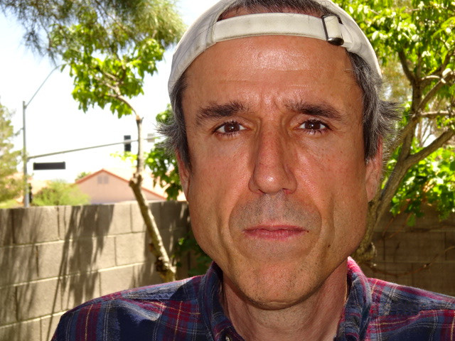

Terrence Andrew Davis (também conhecido como Terry A. Davis) Nasceu no dia 15 de Dezembro de 1969 em Winsconsin, EUA. Desde sua adolescência, ele era reconhecido como superdotado, e por conta disso teve seu primeiro contato com um computador, bem cedo em sua vida. Com a evolução dos computadores, eles se tornaram mais comuns nas residências, e não demorou para que Terry também tivesse um. O mais impressionante é que com apenas 13 anos de idade, o garoto havia ensinado à si mesmo como programar usando a linguagem Assembly.
A sua paixão pelas novas tecnologias foi o que motivou Terry a buscar uma graduação em Engenharia Elétrica na Arizona State University, recebendo seu diploma em 1994, com 24 anos de idade. Terry trabalhou por vários anos no ramo da computação, sendo principalmente como engenheiro. Todos seus colegas de trabalho compartilhavam do mesmo pensamento, ele era um gênio e seria capaz de fazer um grande impacto na indústria com suas habilidades. Porém, complicações de saúde impediram-no de continuar, Terry sofria de Esquizofrenia.
Por muito tempo, ele cresceu como Ateu, porém a sua condição aos poucos mudou sua percepção das coisas, e ele começou a acreditar na existência de Deus de acordo com o Cristianismo, e esse foi um detalhe importante que mudaria o curso de sua vida. Todavia, antes disso Terry apresentava os sintomas de uma pessoa com transtornos de bipolaridade e esquizofrenia, até mesmo com casos de surtos psicóticos e comportamento maníaco, que lhe renderam alguns mêses aprisionado e também internado em um hospital psiquiátrico.
Após alguns casos com suas complicações mentais, ele começou a se voltar mais para Deus e o Cristianismo, até mesmo doando seus pertences para a caridade e retornando para o estado de Arizona, EUA, onde ele finalmente conseguiria achar um emprego estável e conseguir lidar melhor com seu quadro. Ele passou a morar com seus pais no estado, e frequentemente lia a Bíblia Sagrada, afirmando que era sua maneira de se comunicar com Deus. Porém, todo esse tempo lendo a Bíblia, junto do seu quadro de complicações mentais, o fez acreditar que ele havia sido escolhido por Deus para montar um novo templo dedicado à ele. Esse seria o marco inicial de um dos seus maiores projetos, o sistema operacional TempleOS.
TempleOS: um sistema operacional que foi feito com a premissa de atender um pedido feito por Deus a Terry A. Davis. O sistema em si tinha algumas especificações peculiares, ocupando apenas 19.5mb de armazenamento, tendo somente 16 cores, em uma resolução de 640x480px, sem suporte para GPU, tudo isso em algo próximo de 100.000 linhas de código, tudo escrito por apenas um único homem em 10 anos. Algo importante de se notar é que o sistema operacional não tinha qualquer suporte para conectividade com a internet, portanto navegadores eram inutilizáveis pelo usuário.
Holy C: além da criação de um sistema operacional, Terry também foi responsável por criar uma variação da linguagem C de programação, conhecida como Holy C, aquela que serviu como base para a criação dos primeiros softwares do sistema TempleOS, como jogos 2D e 3D, leitores de imagem e gerenciadores de arquivos. Dentre os jogos criados, um deles tinha a função de imprimir trechos aleatórios da bíblia na tela do usuário, e algumas alegações confirmam que essa seria a maneira que Terry se comunicaria com Deus ao invés de usar a Bíblia Sagrada.
DolDoc: trata-se de uma extensão de arquivos também criada por Terry, que serviria para a criação da maioria dos componentes de seu sistema operacional, uma extensão de texto que também era capaz de conter imagens, vídeos e código. Ou seja, os jogos do sistema também podiam funcionar à partir de arquivos DolDoc.
Terrence Andrew Davis foi um engenheiro e programador genial, que sozinho foi capaz de criar um sistema operacional, uma linguagem de programação baseada em C, e uma extensão de arquivos que aceitava imagens, vídeos, texto e código. Isso prova que, apesar das dificuldades, ainda é possível inovar em seu ramo, basta ter uma